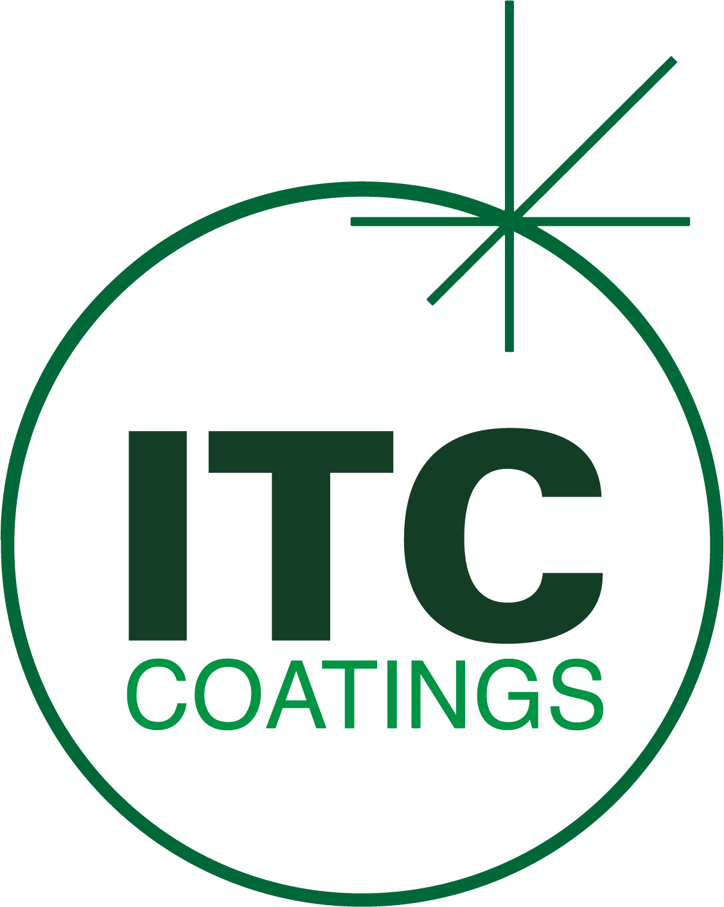
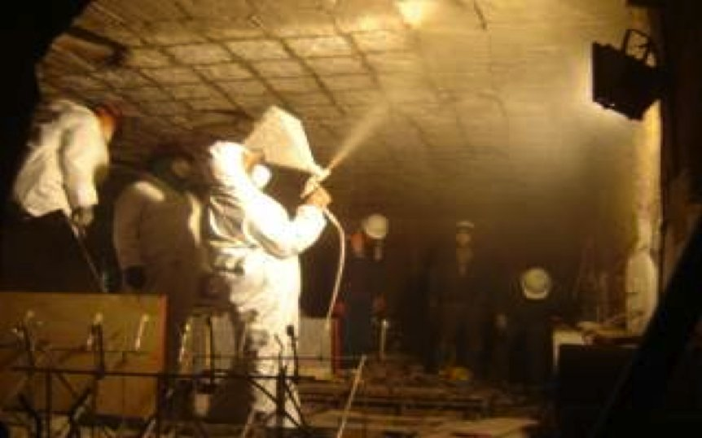

When Arcelor Mittal's Harriman Steel facility needed to address excessive heat loss, high fuel consumption, and ongoing refractory maintenance in their pusher reheat furnace, ITC Coatings delivered an engineered solution that generated $3,762,500 in annual savings -- with a return on investment measured in just over one week.
The pusher reheat furnace at Arcelor Mittal Harriman Steel was rated at 75 tons per hour and utilized Bloom high-temperature burners designed for 750°F combustion air with a recuperator. Maximum BTU input was 89.9 MM BTU, or 1.2 MM BTU per ton. Despite this capacity, the facility faced several critical problems:
Using thermography and heat flow calculations, ITC recommended a hot face veneer system consisting of:
ITC's high-emissivity ceramic coatings absorb energy from the process and re-radiate it back to the furnace load, delivering multiple simultaneous benefits: lower heat loss through the refractory walls, reduced maintenance costs, improved thermal efficiency, reduced scale generation, and increased throughput.
The combination of the veneer system and ITC's ceramic coating significantly reduced shell temperatures across the entire furnace, eliminating hot spots and improving safety conditions for plant personnel.
The thermal efficiencies achieved through ITC's coating system delivered a 20% reduction in BTU consumption, dramatically lowering natural gas costs.
The improved thermal efficiency enabled operators to reduce normal furnace operating temperatures from 2,150°F to 1,840°F -- a 310°F reduction -- while maintaining the same product quality. This was possible because the coating redirects radiant energy to the steel load rather than losing it through the furnace walls.
By reflecting energy back to the colder steel load, furnace throughput increased from 65 tons per hour to the rated 75 tons per hour. The furnace was finally operating at its design capacity.
Lower operating temperatures and increased throughput produced a significant decrease in scale generation (Fe₂O₃). This resulted in an approximate 2.5% yield improvement, amounting to 6,150 additional tons of saleable product per year at full production.
Combining all efficiencies, the energy required dropped from 1.2 MM BTU per ton to 0.96 MM BTU per ton. ITC noted that with recommended flue exhaust restrictions and burner control system updates, the furnace could achieve 0.88 MM BTU per ton -- a 33% total reduction in fuel usage.

ITC veneer and coating installation
| Fuel Savings | $833,000 per year (at $8.00 per MM BTU) |
| Increased Production Value | $2,929,500 per year (6,510 additional tons x $450/ton) |
| Total Annual Impact | $3,762,500 |
| Return on Investment | 1.33 weeks (at full production of 6,000 hours/year) |
This case study demonstrates how ITC's ceramic coating technology delivers value far beyond simple refractory protection. The Arcelor Mittal Harriman project achieved fuel savings, throughput gains, yield improvements, and reduced scale generation -- all from a single coating installation with a payback period of less than two weeks.
For steel mills operating pusher reheat furnaces, walking beam furnaces, or any high-temperature reheating operation, ITC's veneer and coating systems represent one of the highest-ROI capital improvements available. Contact ITC Coatings to schedule a thermal assessment of your furnace operations.
ITC Coatings has been engineering high-temperature ceramic coating solutions for the steel, cement, petrochemical, and power generation industries since 1980. Our thermal engineering team uses thermography and proprietary heat flow calculations to quantify savings before installation, giving plant managers the confidence to invest. Based in San Angelo, Texas.
Ready to reduce your energy costs and extend refractory life?
Email: info@itccoatings.com
Phone: (325) 340-1304
Web: itccoatings.com